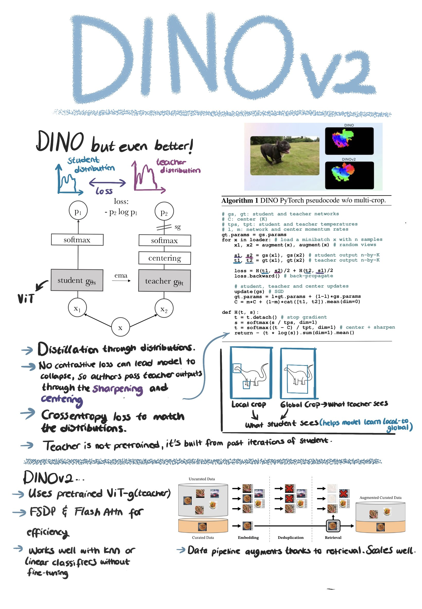

DINOv2: A Deep Dive into Architecture and Training
In 2023, Meta AI Research unveiled DINOv2 (Self-Distillation with No Labels v2), a breakthrough in self-supervised visual learning that produces remarkably versatile and robust visual features. This article provides a detailed exploration of DINOv2’s architecture and training methodology, explaining how it achieves state-of-the-art performance across diverse visual tasks without task-specific supervision.

Architectural Foundation: Vision Transformers
At the heart of DINOv2 is the Vision Transformer (ViT) architecture, which has proven highly effective for computer vision tasks. DINOv2 specifically uses:
ViT Backbone Variants
- ViT-S/14: Small model (22M parameters)
- ViT-B/14: Base model (87M parameters)
- ViT-L/14: Large model (304M parameters)
- ViT-g/14: Giant model (1.1B parameters)
The “/14” indicates a patch size of 14×14 pixels. These patches are how images are tokenized before being processed by the transformer.
Architectural Enhancements
DINOv2 incorporates several architectural improvements over the original DINO:
Improved Layer Normalization: Uses a modified version of layer normalization that enhances stability during training at scale.
SwiGLU Activation: Replaces standard ReLU or GELU activations with SwiGLU, which improves representation quality.
Register Tokens: Additional learnable tokens (alongside the [CLS] token) that capture different aspects of image information.
Attention Bias: Incorporates relative position embeddings through attention biases instead of absolute positional encodings.
Post-Normalization: Places the layer normalization after the multi-head attention and feed-forward blocks rather than before them.
Training Methodology: Self-Distillation Framework
DINOv2’s training methodology centers around self-distillation, where a model essentially teaches itself. This is implemented through a student-teacher framework:
Teacher-Student Architecture
- Student Network: The network being trained, updated via backpropagation
- Teacher Network: An exponential moving average (EMA) of the student’s parameters
- Both networks share the same architecture but different parameters
This approach creates a moving target that continuously evolves as training progresses, preventing trivial solutions where the network collapses to outputting the same representation for all inputs.
Multi-Crop Strategy
A key component of DINOv2’s training is its sophisticated multi-crop approach:
- Global Views: Two large crops covering significant portions of the image (224×224 pixels)
- Local Views: Multiple smaller crops capturing image details (96×96 pixels)
The student network processes both global and local views, while the teacher network only processes global views. This forces the model to learn both global context and local details.
Self-Supervised Objective
The training objective is a cross-entropy loss that encourages the student’s output distribution for local views to match the teacher’s output distribution for global views of the same image. Mathematically:
L = H(Pt(g), Ps(l))Where:
- H is the cross-entropy
- Pt(g) is the teacher’s prediction on global views
- Ps(l) is the student’s prediction on local views
The teacher’s outputs are sharpened using a temperature parameter that gradually decreases throughout training, making the targets increasingly focused on specific features.
Data Curation and Processing
DINOv2’s impressive performance comes not just from architecture but from meticulous data preparation:
LVD-142M Dataset
The researchers curated a high-quality dataset of 142 million images from publicly available sources, with careful filtering to remove:
- Duplicate images
- Low-quality content
- Inappropriate material
- Text-heavy images
- Human faces
Data Augmentation Pipeline
During training, DINOv2 employs a robust augmentation strategy:
- Random resized cropping: Different sized views of the same image
- Random horizontal flips: Mirroring images horizontally
- Color jittering: Altering brightness, contrast, saturation, and hue
- Gaussian blur: Adding controlled blur to some views
- Solarization: Inverting pixels above a threshold (applied selectively)
These augmentations create diverse views while preserving the semantic content, forcing the model to learn invariance to these transformations.
Distributed Training Strategy
Training a model of DINOv2’s scale requires sophisticated distributed computing approaches:
Optimization Details
- Optimizer: AdamW with a cosine learning rate schedule
- Gradient Accumulation: Used to handle effectively larger batch sizes
- Mixed Precision: FP16 calculations to speed up training
- Sharding: Model parameters distributed across multiple GPUs
Effective Batch Size
DINOv2 uses enormous effective batch sizes (up to 65,536 images) by leveraging distributed training across hundreds of GPUs. This large batch size is crucial for learning high-quality representations.
Regularization Techniques
To prevent representation collapse and ensure diverse, meaningful features, DINOv2 employs:
- Centering: Ensuring the average output across the batch remains close to zero
- Sharpening: Gradually decreasing the temperature parameter of the teacher’s softmax
- DALL-E VAE Integration: Using a pre-trained DALL-E VAE to improve representation quality
- Weight Decay: Applied differently to various components of the model
Feature Extraction and Deployment
After training, DINOv2 can be used in different ways:
Feature Extraction Methods
- [CLS] Token: The class token representation serves as a global image descriptor
- Register Tokens: Multiple specialized tokens that capture different aspects of the image
- Patch Tokens: Local features corresponding to specific regions of the image
Model Distillation
The researchers also created smaller, distilled versions of DINOv2 that maintain much of the performance while requiring significantly fewer computational resources for deployment.
Conclusion
DINOv2 represents a remarkable achievement in self-supervised visual learning. Its sophisticated architecture and training methodology enable it to learn general-purpose visual features that transfer exceptionally well across diverse tasks. The careful balance of architectural innovations, data curation, and training techniques creates a visual representation system that approaches the versatility and power that we’ve seen in large language models.
The success of DINOv2 highlights how self-supervised learning can leverage vast amounts of unlabeled data to create foundation models for computer vision that may eventually eliminate the need for task-specific supervised training in many applications.